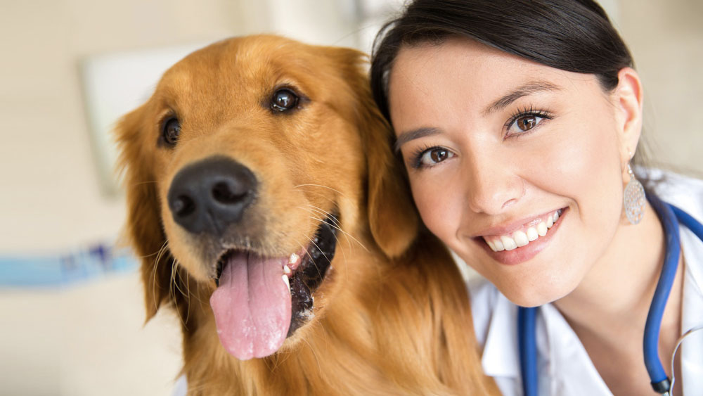

Como Você Pode Ajudar
Existem várias maneiras de fazer a diferença na vida dos nossos amigos de quatro patas. Descubra como você pode contribuir para nossa causa.
Nosso Processo de Trabalho
1
Resgate
Identificamos e resgatamos cães em situação de risco ou abandono, proporcionando os primeiros cuidados emergenciais.
2
Reabilitação
Oferecemos tratamento veterinário completo, cuidados especializados e acompanhamento comportamental.
3
Socialização
Preparamos os cães para convivência em família através de treinamento e socialização adequada.
4
Adoção
Encontramos lares amorosos e responsáveis, realizando todo o processo de acompanhamento pós-adoção.
0
Resgates realizados
0
Adoções bem-sucedidas
0
Voluntários ativos
0
Em doações anuais
Faça uma Doação
Suas doações são fundamentais para mantermos nosso trabalho. Com elas, conseguimos:
- Fornecer alimentação adequada
- Realizar tratamentos veterinários
- Manter a estrutura de acolhimento
- Comprar medicamentos e vacinas
- Realizar castrações
Quero Doar
Doação segura via PIX ou cartão
Seja Voluntário
Como voluntário, você pode ajudar de diversas formas:
- Auxiliar nos cuidados diários
- Participar de eventos de adoção
- Ajudar na socialização dos cães
- Contribuir com suas habilidades específicas
- Divulgar nosso trabalho
Quero ser Voluntário
Faça parte do nosso time!
